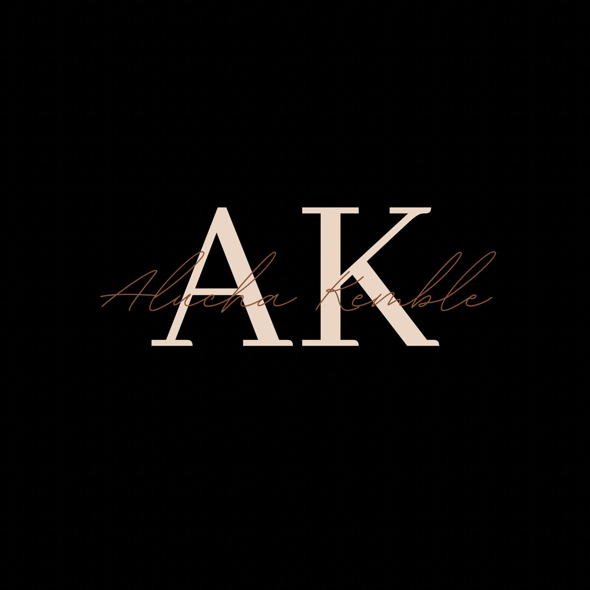
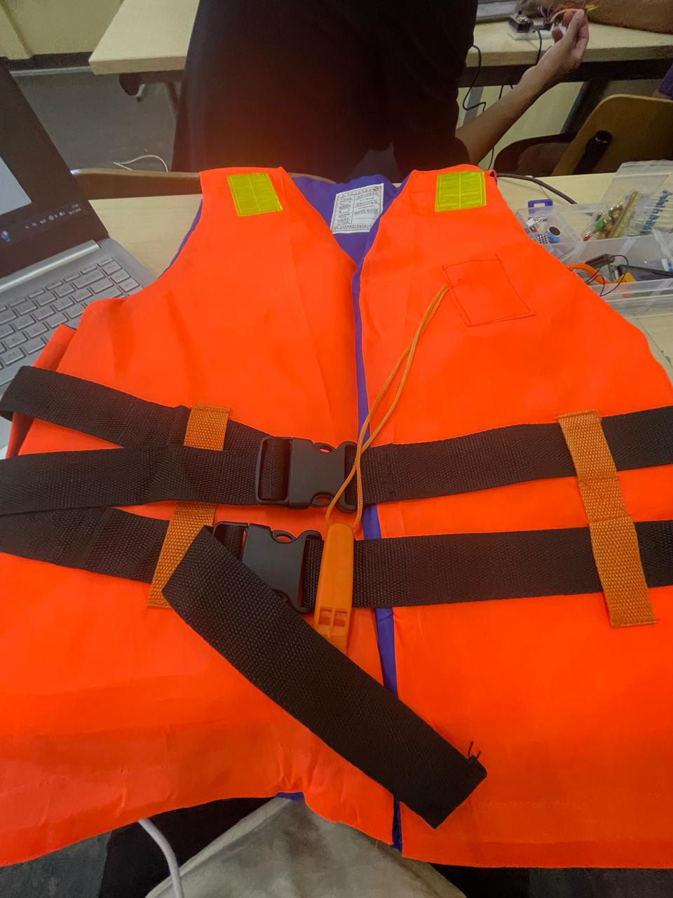

De Guardian Vest is een slim veiligheidsvest dat bedoeld is om valbewegingen te detecteren. Het is bestemd voor ouderen en mensen met een bewegingsbeperking. Het vest blaast gelijk op zodra iemand zal vallen om ongelukken te voorkomen. Het prototype werkte nog niet volledig, maar liet wel zien hoe het systeem in de toekomst kan functioneren.
Hoe je een prototype opzet, hoe je sensordata analyseert en hoe je problemen identificeert tijdens het ontwikkelproces.
Mijn digitale portfolio is een website die ik heb ontworpen en gebouwd om mijn werk, projecten en vaardigheden te presenteren. De website bestaat uit meerdere pagina's, zoals Home, About en Projecten, en is bedoeld om mijn groei als ICT‑student te laten zien.
Ik heb de volledige website zelf opgebouwd met HTML en CSS. Daarnaast heb ik de structuur ontworpen, de inhoud geschreven en de pagina's vormgegeven. Ook heb ik gewerkt aan een duidelijke navigatie en een overzichtelijke indeling.
Hoe je een website opbouwt, hoe je pagina's structureert en hoe je een portfolio professioneel vormgeeft.